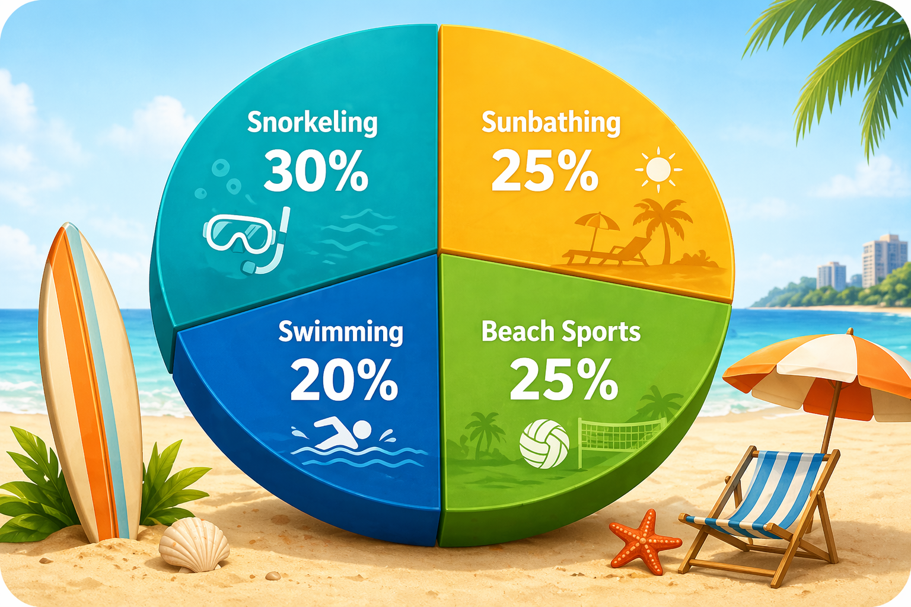
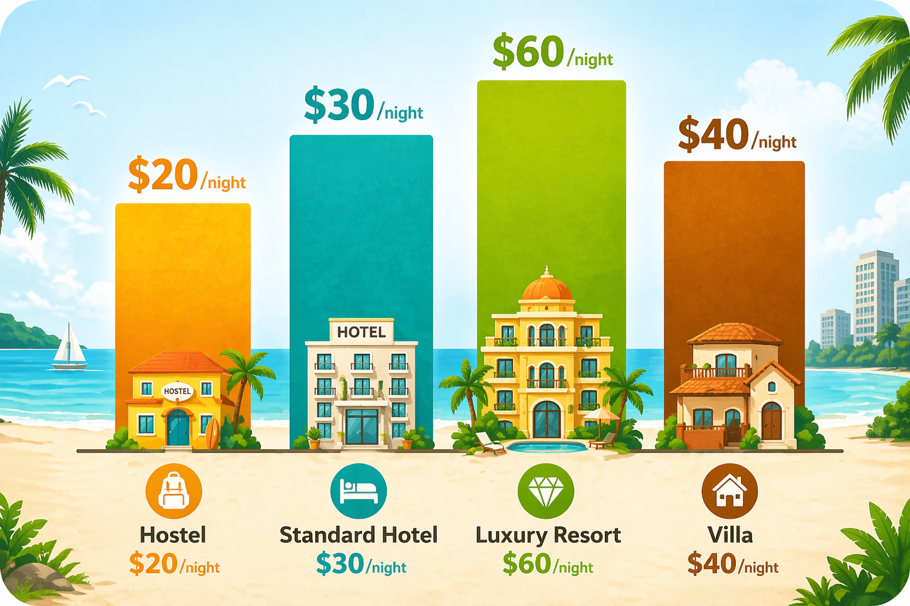

Thailand’s City That Never Sleeps
Pattaya Pulse: Food, Sun and Neon Nights
From bustling promenades to nearby islands, the city offers an energetic and diverse escape. Discover Pattaya City, with vibrant nightlife and rich cultural landmarks.

26.4.2026

Reading Time: 6 min

Read: 1.2k

Shared: 102

Pattaya is a vibrant coastal city that offers a rich mix of experiences
for
every kind of traveler.
From its sunny beaches and tropical islands to lush green viewpoints, nature lovers will find plenty to
explore. The city is also famous for its energetic nightlife, with lively streets, bars, and
entertainment
venues that come alive after sunset.
Beyond that, Pattaya has a cultural side, featuring beautiful
temples, local markets, and traditional Thai performances. Visitors can enjoy water sports during the
day
and world-class dining in the evening. Whether you’re seeking relaxation, adventure, or entertainment,
Pattaya delivers it all in one place.
Rain periods in Pattaya

The rainy season in Pattaya typically runs from May to October, bringing warm tropical showers and
lush
green scenery. Rainfall often comes in short, heavy bursts, usually in the late afternoon or
evening,
leaving plenty of time for daytime activities. During this period, the landscape becomes more
vibrant,
and waterfalls and gardens are at their most beautiful.
While the weather can be unpredictable,
the
city remains lively, with fewer crowds and a more relaxed atmosphere. Travelers can still enjoy
beaches,
markets, and cultural sites between the showers. The rain also brings cooler temperatures, making it
more comfortable to explore. Overall, Pattaya’s rainy season offers a unique and refreshing
perspective
of the city.
Popular beach activities
Tourists can enjoy jet skiing, parasailing, snorkeling, and banana boat rides along the beautiful coastline. For those who prefer relaxation, sunbathing on the sandy beaches and enjoying fresh seafood by the sea are popular choices. Pattaya’s beaches provide the perfect mix of adventure and relaxation.

Accommodation expenses
Hostels are the most budget-friendly option, making them ideal for backpackers and travelers looking to save money. Standard hotels offer a balance between affordability and comfort, while luxury hotels provide premium services and exclusive amenities at higher prices. Villas are usually the most expensive option, offering privacy, spacious living areas, and a more exclusive travel experience.

Pattaya is a popular coastal city in Thailand known for its beautiful beaches, vibrant nightlife, and diverse attractions. Visitors can explore tropical islands, cultural landmarks, local markets, and exciting entertainment venues. The city offers a mix of relaxation, adventure, and modern tourism experiences. Pattaya is a destination that appeals to travelers from all around the world.
Follow me for more content like this, and
share the article with your
friends!